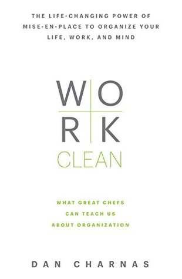

Work Clean

By Dan Charnas
My thoughts
Book Blurb - Work Clean (audio, SoundCloud)
Notes
Working Clean
The values and behaviors that spring from that chefly system aren’t about cooking, but about achieving excellence.
There is a big difference between working hard and working clean.
Responsibility for our success lies in our self-direction.
By being organized, you will be more efficient. By being more efficient, you will have more time in your day. By having more time in your day, you will be more relaxed in your day; you will be able to accomplish the task at hand in a clear, concise, fluid motion.
Make sure that your station is clean,” Keller said. Ruhlman paused, thrown off by the simplicity of the statement. “And?” “And everything that follows from that,” Keller replied.
He has inner discipline to work longer and harder, but he doesn’t follow an outer discipline—a body of principles and behaviors—to guide his considerable will and skill. How to prepare, how to create order, and how to prioritize the work at hand.
Mise-en-place comprises three central values: preparation, process, and presence.
Planning is Prime
Planning is the first thought, not the afterthought.
Right planning promotes the right action, save time and unlocks opportunity. Scheduling tasks requires being honest with time and respecting your abilities and limitations.
And this all must happen before the first order comes in, because once it does, they will have no time for anything but the act of cooking. Thus, for chefs and cooks, the act of planning takes precedence; it must precede cooking. Chefs become planning machines so they can become cooking machines
When they find themselves running behind or missing things in the kitchen, their chefs refer to the students’ timelines. Usually, the chef can point to the error in the students’ planning that caused the error in behavior.
Where is “there”? Everywhere. How early? Fifteen minutes. Why? The dividends are serenity and opportunity. Entering a space calmly, under your own control, and without apology retains your power and dignity. So many of us hustle and stumble our way into a room after an agreed-upon time. When we do that, we forfeit a chunk of our energy before we even sit down. Arriving early often unlocks opportunity.
Arranging Spaces
Every day, chefs cultivate the use of both sides of the body, both sides of a space, and both sides of a motion.
We arrange spaces—and perfect movements within those spaces—to remove resistance. The less friction we have in our work, the easier it is to do, the more we can do, and the quicker we can do it; and thus the more physical and mental energies we can preserve for other things
You can also think of these as preflight and postflight checklists.
Commit to setting your station and reducing impediments to your movements and activities. Remove friction.
Clean as you Go
The real work of organization is not being clean, but working clean: keeping the system no matter how fast and furious your pace is.
It involved more than the physical repercussions of clutter in one’s workstation, of not having the room to cut and cook. Rather, the act of cleaning spaces maintained an optimal mind state for a cook. Thus the most important notion about cleaning was when cooks were supposed to do it: all the time.
If she waited to clean and let things accumulate, she’d lose her attention to detail in a restaurant where the details mattered. You can’t tend to the details if you can’t see them.
And working clean meant that she had to be assiduous about putting every ingredient and tool back where it had been before she grabbed it. The moment she stopped cleaning, things spun out of control.
What many chefs seem to be aiming for, then, is not cleaning for the sake of cleanliness, but rather cleaning as a spiritual practice. Chefs see a direct correlation not only between the condition of one’s station and one’s mind, but also between the tolerance of dirt and the tolerance of distractions, and between the disposition of oneself to cleaning and to responsibility in general.
Commit to maintaining your system. Always be cleaning.
Making First Moves
The present has incalculably more value than the future. An action taken now has immeasurably more impact than a step taken later because the reactions to that action have more time to perpetuate. Furthermore, because our mind state has a huge effect on how we perceive time, acting in the present releases psychological pressure and opens up more time. Starting is, in effect, a shortcut
We hold a linear, one-dimensional concept of time. Along this timeline, we order our tasks: First we do this, then we do that. Much of the literature about productivity focuses on how we do this ordering. Do we put the most urgent items first, or the most important?
In contrast, chefs and cooks cultivate a two-dimensional concept of time. A chef thinks this way: In the foreground are the projects that need my presence: my hands, my mind, my body. But in the background are the projects that don’t need my continued presence, but need me to start or maintain them.
There are two kinds of work. The first is hands on, immersive, and creative, like writing or designing. This is solo, creative work that is usually your most important work. But there is also hands off, process work that enables other people to do work. This seems less important, since it’s more managerial, but since it enables other people to do their work it’s worth doing first.
Immersive time is worth its face value. Five minutes of my energy now equals 5 minutes of my energy later.
Anything that needs your input or feedback on a project to keep it moving forward is process work.
Get in the habit of determining what tasks require immersive versus process time.
First, a first move can serve as a placeholder or a mark. When we don’t have time to execute in the moment, a mark put in the right physical or digital place ensures that we won’t forget an action and can subtly tilt us toward the task to be done
Second, making first moves creates momentum. The first move compares to a beachhead, a military term signifying the most difficult first step of an invasion by sea
Finishing Actions
It was too easy to give in to fatigue and frustration. It was too easy to stop or pause a project as the finish line came into view with a deluded confidence that it could be completed later. She knew that if she indulged her restlessness—even with the intention to get another project started—she would end up throwing her entire day off.
Dish that is 90 percent finished has the same worth as a dish that is zero percent finished.
Finishing actions clears the mind as much as it clears the plate. An action once finished does not need attention or memory. An unfinished action still needs both to be completed. An accumulation of unfinished actions creates a mental clutter and a brain drain.
Starting” is less about doing everything immediately and more about creating a triage system to prioritize current and future actions. “Finishing” is not so much about completing everything and more about not being distracted by the periodic “starting” of other things. “Finishing” can also be stopping a project while it’s incomplete but taking just an extra few seconds to wrap it up for resumption later so as to not leave loose ends hanging. What chefs attempt to avoid are orphaned tasks—things that take up physical and mental space because they haven’t been tied up in the easiest possible form to be resumed later.
Better to confront the reasons why we stop before finishing and learn mental and physical techniques to push through. Better to enjoy the temporal, physical, and mental dividends of finishing than pay the price later for not doing so.
Any time you enter a creative session, take as many breaks as you like within it. On a piece of paper or a spreadsheet, begin an intentional break log.
Beside each break, put the reason for the break.
■Mental (e.g., when you want to chat, browse, or when you just can’t think) ■Physical (e.g., bathroom breaks, snack breaks, stretching, or walking around) ■Social (e.g., interruptions, chats with friends or colleagues)
■Work (e.g., other projects
First, discern fatigue from fear. Fear often masquerades as fatigue, with a similar physiology: heavy eyelids, sore muscles, even sleepiness. Real fatigue is to be respected. Fear-related fatigue often needs a cup of coffee, a pep talk, or a kick in the pants.
At other times anger or despair about our circumstances can drain our energy and drive us from our work. Whether we doubt our skill or our will, the solution in the face of fear, anger, or despair remains the same: to take small forward steps, to literally put one foot in front of the other, or move your arms and keep the fingers moving.
Until my project is done, I’m the assembly-line worker, not the executive.
We engage in magical thinking, an overestimation of our personal power and an underestimation of the rules of time and space. Overconfidence leads us to believe that we don’t have to estimate the time it takes to complete a project, nor deliberately set aside the time for that work. Overconfidence is why we don’t start a project until it’s too late and also why we get that “finish line syndrome” mentioned earlier—for example, writing an e-mail but leaving the last few sentences or details for later.
The solution for overconfidence is honesty with time, the realization that we are all ruled by the laws of physics.
What’s stopping me from moving forward? What has stopped the process?
So our goals at any stopping point are: (1) minimize the time spent waiting; and (2) redeem any time we must wait by using it to minimize our wait period at the next stopping point.
Perfectionism comes from either of two emotional sources: fear of failure, or despair over its impending arrival. Without delivery, there’s no feedback, severing the improvement loop that creates excellence. Excellence is quality delivered.
Slowing Down to Speed Up
Chefs never run because they’re always in the right place at the right time,” he said. The implication was clear: If you’re running, it’s because you aren’t prepared. If you’re running, you’re wasting energy. If you’re running, you’re not thinking.
And they know that one’s perception of time has a lot to do with one’s relationship to space. Those concepts of time and space merge in the almost quantum notion of slowing down to speed up.
When you find yourself rushing or panicking or both, just stop. Breathe. If your anxiety compels you to move, then clean. The act of cleaning, of wiping down your station, will force you to take some breaths. Look around you. Think about where you are and where you need to be. Think of the next step to get you there and take that step, slowly.
Sometimes it’s the panic about the work that’s in your way, not the work itself.
In the duality between speed and precision, precision must always precede speed.
Chefs believe that the state of their physical space not only has an effect on their minds, but on their perception of time. If your station is dirty, your day itself becomes compressed. If your station is clean, your day springs open. If you’re worried about time, that worry will show up in your physical space. If you’re calm about time, your workspace will be clear.
The work is still getting done, albeit at a snail’s pace, but the difference is this: (1) She hasn’t given up her control, which is what she’d do if she decided to start browsing the Web; (2) She still has forward momentum, if languid; (3) She gives herself more time to think and be mindful of each action, which is the opposite of freaking out or shutting down in the face of an avalanche of work; and (4) She breaks down her actions into their constituent parts, which, as we did in the above exercise, is a time-tested method of getting large projects done, but not normally how we relate to smaller, more mundane activities like writing an e-mail or preparing for a meeting.
The more the resistance, the slower you move. But don’t disengage. You can use this slow-but-don’t-stop technique for just about anything that you don’t want to do: getting out of bed in the morning (move left leg, move right leg, shift body, feet on floor), washing the dishes (move plate, turn faucet on, soak plate, grab sponge, move hand in a circular motion).
Precision preceeds speed. A calm body can calm the mind. Commit to working smoothly and steadily. Use physical order to restore mental order. Don't rush.
Call and Callback
Excellence requires active listening. Commit to confirming and expecting confirmation of essential communication. You give people information when they need it. When you receive communication, you let folks know you got it.
Total Utilization
Commit to valuing space, time, energy, resources, and people.
Chefs save space to save motion, save motion to save time, save time to save resources, save resources to save the business.
Putting it together
Commit to 30 minute preparation for the day
Commit to improving your process
Commit to being present
Actions - ingredients
Missions - menu
Front and back-burners (sequenced tasks) - recipes
Routines (meeting, immersive and process time-blocks) - mis-en-place;
You might also like
- Essentialism: The Disciplined Pursuit of Less
- The Effective Manager